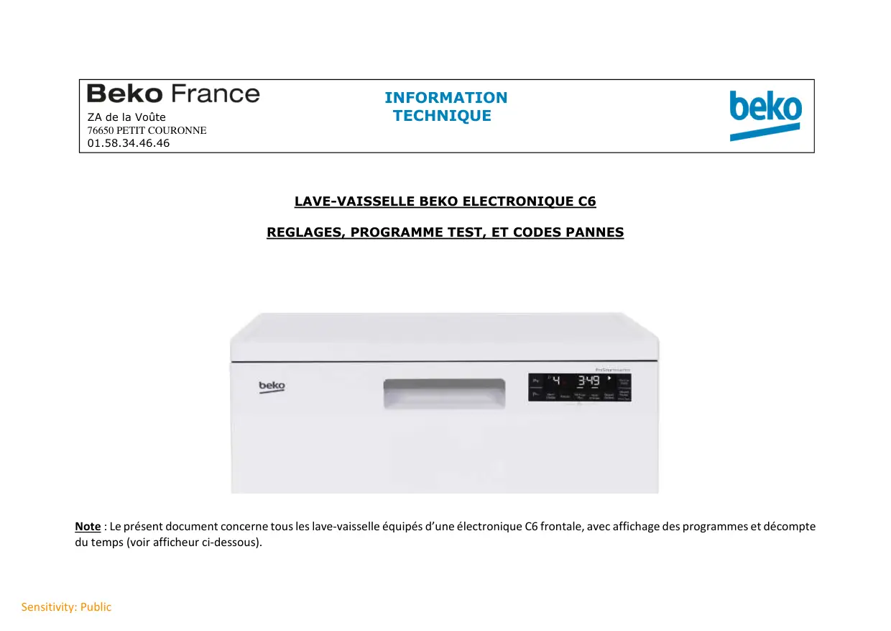
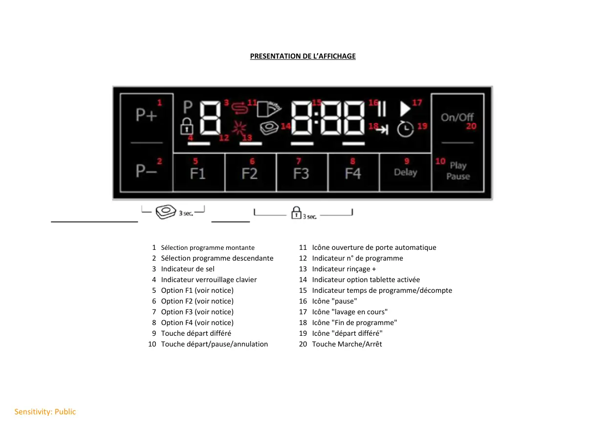
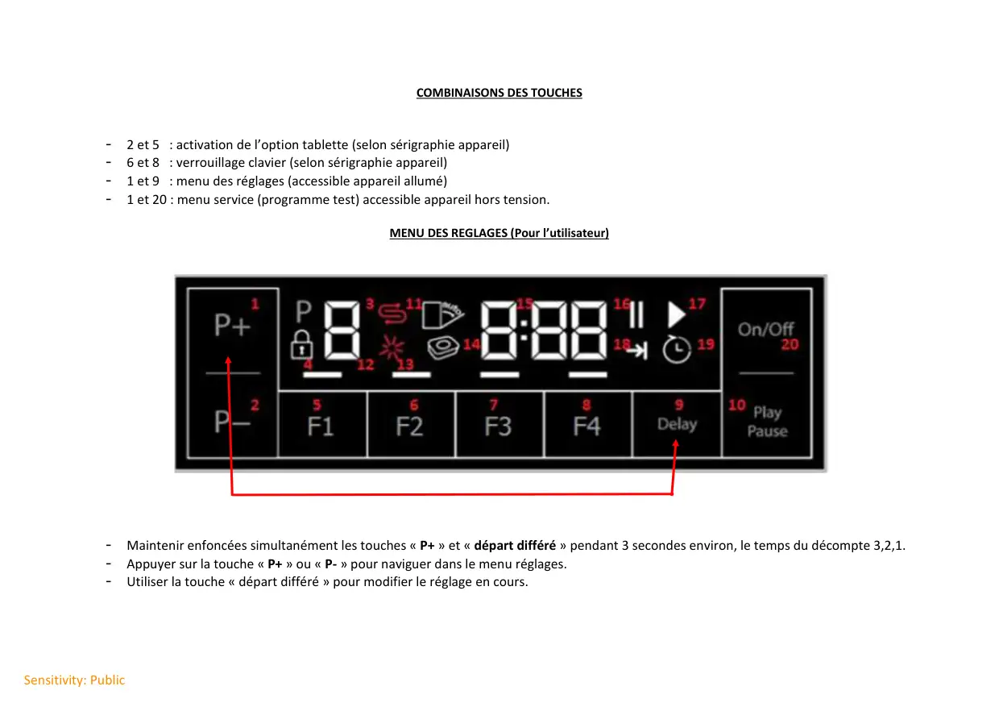
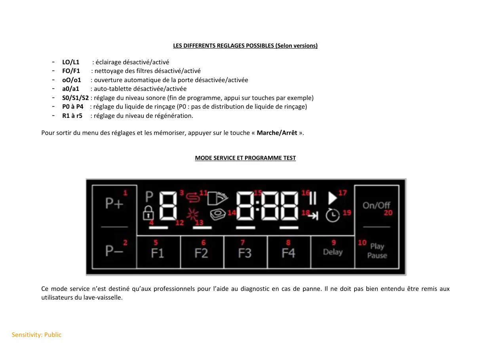
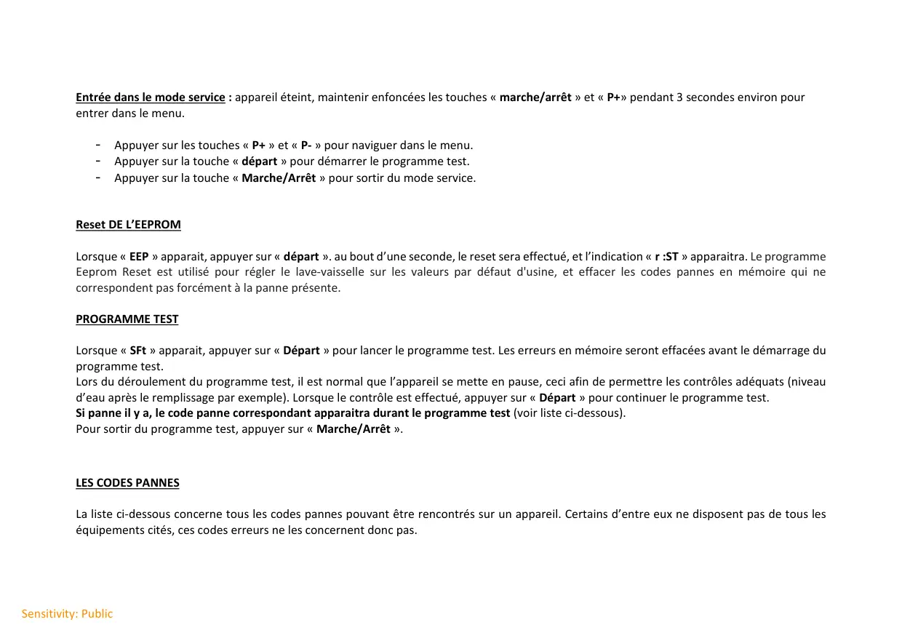
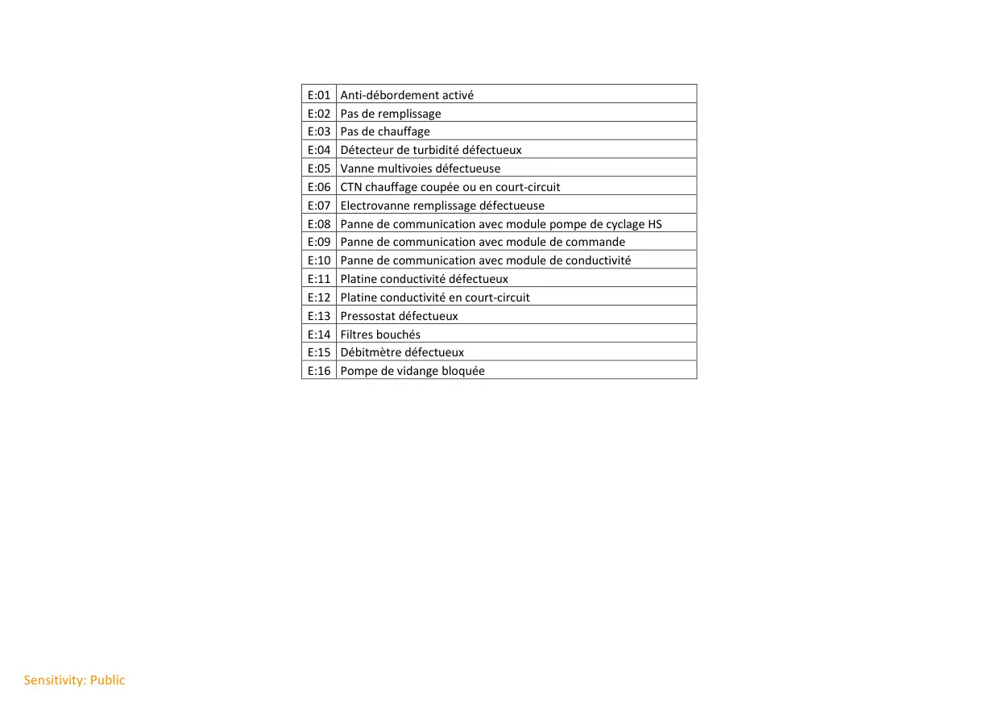

Progr.Test Réglages lave vaisselle C6

Sensitivity: PublicLAVE-VAISSELLE BEKO ELECTRONIQUE C6REGLAGES, PROGRAMME TEST, ET CODES PANNESNote : Le présent document concerne tous les lave-vaisselle équipés d’une électronique C6 frontale, avec affichage des programmes et décomptedu temps (voir afficheur ci-dessous).INFORMATIONZA de la Voûte TECHNIQUE76650 PETIT COURONNE01.58.34.46.46
1 / 6
Sensitivity: PublicPRESENTATION DE L’AFFICHAGE1 Sélection programme montante11 Icône ouverture de porte automatique2 Sélection programme descendante12 Indicateur n° de programme3 Indicateur de sel13 Indicateur rinçage +4 Indicateur verrouillage clavier14 Indicateur option tablette activée5 Option F1 (voir notice)15 Indicateur temps de programme/décompte6 Option F2 (voir notice)16 Icône "pause"7 Option F3 (voir notice)17 Icône "lavage en cours"8 Option F4 (voir notice)18 Icône "Fin de programme"9 Touche départ différé19 Icône "départ différé"10 Touche départ/pause/annulation20 Touche Marche/Arrêt
2 / 6
Sensitivity: PublicCOMBINAISONS DES TOUCHES- 2 et 5 : activation de l’option tablette (selon sérigraphie appareil)- 6 et 8 : verrouillage clavier (selon sérigraphie appareil)- 1 et 9 : menu des réglages (accessible appareil allumé)- 1 et 20 : menu service (programme test) accessible appareil hors tension.MENU DES REGLAGES (Pour l’utilisateur)- Maintenir enfoncées simultanément les touches « P+ » et « départ différé » pendant 3 secondes environ, le temps du décompte 3,2,1.- Appuyer sur la touche « P+ » ou « P- » pour naviguer dans le menu réglages.- Utiliser la touche « départ différé » pour modifier le réglage en cours.
3 / 6
Sensitivity: PublicLES DIFFERENTS REGLAGES POSSIBLES (Selon versions)- LO/L1 : éclairage désactivé/activé- FO/F1 : nettoyage des filtres désactivé/activé- oO/o1 : ouverture automatique de la porte désactivée/activée- a0/a1 : auto-tablette désactivée/activée- S0/S1/S2 : réglage du niveau sonore (fin de programme, appui sur touches par exemple)- P0 à P4 : réglage du liquide de rinçage (P0 : pas de distribution de liquide de rinçage)- R1 à r5 : réglage du niveau de régénération.Pour sortir du menu des réglages et les mémoriser, appuyer sur le touche « Marche/Arrêt ».MODE SERVICE ET PROGRAMME TESTCe mode service n’est destiné qu’aux professionnels pour l’aide au diagnostic en cas de panne. Il ne doit pas bien entendu être remis auxutilisateurs du lave-vaisselle.
4 / 6
Sensitivity: PublicEntrée dans le mode service : appareil éteint, maintenir enfoncées les touches « marche/arrêt » et « P+» pendant 3 secondes environ pourentrer dans le menu.- Appuyer sur les touches « P+ » et « P- » pour naviguer dans le menu.- Appuyer sur la touche « départ » pour démarrer le programme test.- Appuyer sur la touche « Marche/Arrêt » pour sortir du mode service.Reset DE L’EEPROMLorsque « EEP » apparait, appuyer sur « départ ». au bout d’une seconde, le reset sera effectué, et l’indication « r :ST » apparaitra. Le programmeEeprom Reset est utilisé pour régler le lave-vaisselle sur les valeurs par défaut d'usine, et effacer les codes pannes en mémoire qui necorrespondent pas forcément à la panne présente.PROGRAMME TESTLorsque « SFt » apparait, appuyer sur « Départ » pour lancer le programme test. Les erreurs en mémoire seront effacées avant le démarrage duprogramme test.Lors du déroulement du programme test, il est normal que l’appareil se mette en pause, ceci afin de permettre les contrôles adéquats (niveaud’eau après le remplissage par exemple). Lorsque le contrôle est effectué, appuyer sur « Départ » pour continuer le programme test.Si panne il y a, le code panne correspondant apparaitra durant le programme test (voir liste ci-dessous).Pour sortir du programme test, appuyer sur « Marche/Arrêt ».LES CODES PANNESLa liste ci-dessous concerne tous les codes pannes pouvant être rencontrés sur un appareil. Certains d’entre eux ne disposent pas de tous leséquipements cités, ces codes erreurs ne les concernent donc pas.
5 / 6
Sensitivity: PublicE:01 Anti-débordement activéE:02 Pas de remplissageE:03 Pas de chauffageE:04 Détecteur de turbidité défectueuxE:05 Vanne multivoies défectueuseE:06 CTN chauffage coupée ou en court-circuitE:07 Electrovanne remplissage défectueuseE:08 Panne de communication avec module pompe de cyclage HSE:09 Panne de communication avec module de commandeE:10 Panne de communication avec module de conductivitéE:11 Platine conductivité défectueuxE:12 Platine conductivité en court-circuitE:13 Pressostat défectueuxE:14 Filtres bouchésE:15 Débitmètre défectueuxE:16 Pompe de vidange bloquée
6 / 6